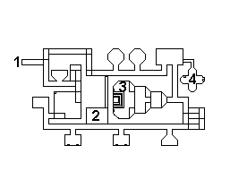

Blackshire: Temple of the Snake

| Temple of the Snake | |
| 1. | Entrance |
| 2. | A golden dragon, there is a switch down here to let you across to the other hallway. |
| 3. | Emmauel for the Rescue Emmanuel quest is in the cage. |
| 4. | Q see below. |
Plenty of chance to get stoned in here, Medusas and Gorgons are everywhere. It is a small dungeon though. The Golden dragon does not appear to have any blatant weaknesses.
Q is one healthy dude, even if he does not look like it. He has better than 5,000 hit points, and can cast finder of death until he is dead. Luckily, he is not very accurate with it, I never had it hit me. He does have the Horn of Ros (It allows you to see actual HP of any monster.) The two chests in the room also contain great stuff, one is full of wands, and the other books.
Leave us a message mgrounds@hotmail.com